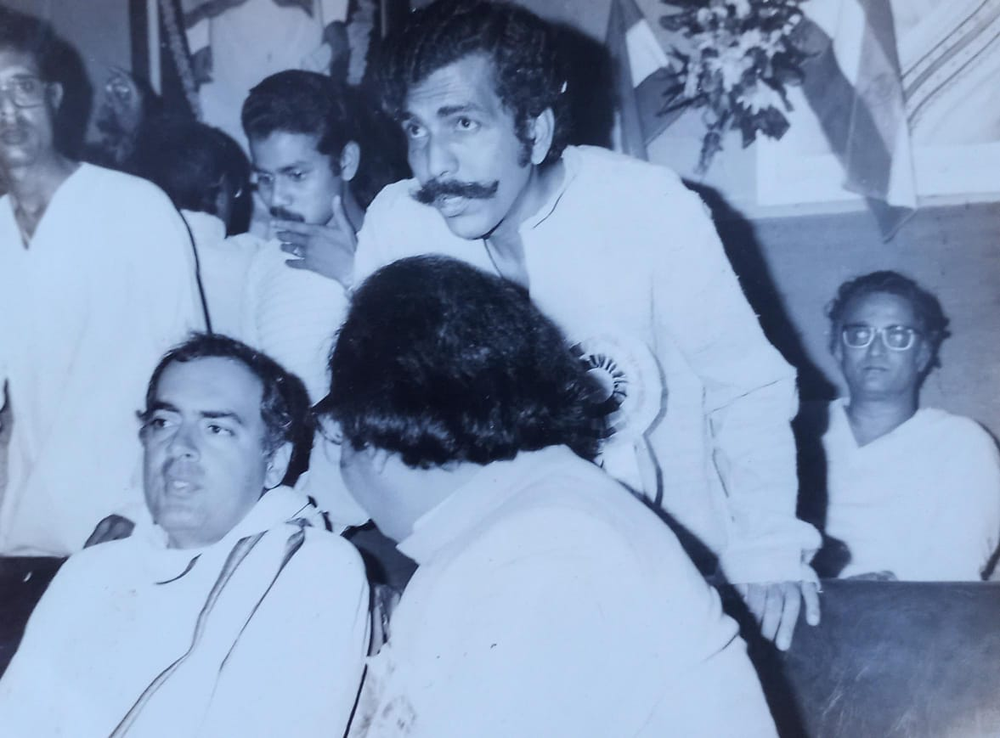

2009 Lok Sabha General Elections
Dr. Gopesh Chandra Sarkar contested in the 2009 Lok Sabha General Elections from the Raiganj constituency from the Bharatiya Janata Party.

Receiving Arun Jaitley (2004)
Dr. Gopesh Chandra Sarkar, the State Vice-President of West Bengal, went to receive Arun Jaitley (Minister of Finance and Corporate Affairs of the Government of India) at the Balurghat helipad.
Receiving Arjun Munda (2004)
Dr. Gopesh Chandra Sarkar, the BJP State Vice-President of West Bengal, went to receive Arjun Munda, the chief minister of Jharkhand, at the Balurghat helipad.
Receiving LK Advani (2004)
This is a photo of Dr. Gopesh Chandra Sarkar beside the car provided by the party, taken during his tenure as State Vice-President of the BJP in West Bengal. The picture was captured at the moment he arrived to receive LK Advani at the Balurghat Helipad, West Bengal

2009 Lok Sabha General Elections
Dr. Gopesh Chandra Sarkar submitting the election nomination papers to the local DM.

Dr. Gopesh Chandra Sarkar attending a party meeting
Dr. Gopesh Chandra Sarkar attending a party meeting with the central telecom minister, Shri Tapan Shikdar, at the party office.
Dr. Gopesh talking to Arjun Munda, the Jharkhand Chief Minister (2004)
This is the picture of Dr. Gopesh Chandra Sarkar talking to Arjun Munda, Jharkhand's chief minister, during Debashree Choudhury's Speech.

Unseen Photo Of Rajiv Gandhi
Eminent Congress leader Shri Shankar Chakraborty classmate and cordial friend of Dr.G.C.Sarkar, is found standing behind Rajiv Gandhi, the then prime minister of India.

Suswagatam Cultural Function 2000
Dr. Sarkar is addressing a patriotic cultural function organised by the government of India.
BJP Meet
In this picture, you can see Dr. Gopesh Chandra Sarkar attending a meeting for the Bharatiya Janata Party in the presence of Rahul Sinha and Arun Bhadra (State BJP Leaders)

On ABVP Stage
This is an image of Dr. Gopesh giving a speech to students on the stage of the Akhil Bharatiya Vidyarthi Parishad (ABVP) organisation affiliated to Rashtriya Swayamsevak Sangh (RSS).

On ABVP Stage
This is an image of Dr. Gopesh sitting on the stage of the Akhil Bharatiya Vidyarthi Parishad (ABVP) organisation affiliated to Rashtriya Swayamsevak Sangh (RSS).
ABRSM Nagpur
This is a picture of Dr. Gopesh in ABRSM (Akhil Bhartiya Rashtriya Shaikshik Mahasangh) Nagpur. It is an organization that aims to promote Cultural Nationalism in education and society.

Shri Krishna Matlog at Dr. Gopesh's Residence in Raiganj.
This is an image of Shri Krishna Matlog at the residence of Dr. Gopesh, he is a Pracharak (preacher) for the Rashtriya Swayamsevak Sangh (RSS) in Eastern India.
Rajendra Singh (AKA Rajju Bhaiya) (RSS)
During his visit to Raiganj (WB), Rajendra Singh (Rajju Bhaiya) stayed at the residence of Dr. Gopesh Chandra Sarkar. Rajju Bhaiya (1922–2003) was the fourth Sarsanghchalak of the RSS, serving from 1994 to 2000. A former professor and Head of the Physics Department at the University of Allahabad, he left academia in the 1960s to fully dedicate himself to the RSS
 (RSS)")
Rajendra Singh (AKA Rajju Bhaiya) (RSS)
During his visit to Raiganj, Rajju Bhaiya (1922–2003), the fourth RSS Sarsanghchalak, stayed at Dr. Gopesh Chandra Sarkar’s residence.
 (RSS)")
Rajendra Singh (AKA Rajju Bhaiya) (RSS)
During his visit to Raiganj, Rajju Bhaiya (1922–2003), the fourth RSS Sarsanghchalak, stayed at Dr. Gopesh Chandra Sarkar’s residence.
Rajendra Singh (AKA Rajju Bhaiya) (RSS)
During his visit to Raiganj, Rajju Bhaiya (1922–2003), the fourth RSS Sarsanghchalak, stayed at Dr. Gopesh Chandra Sarkar’s residence.
 (RSS)")
Rajendra Singh (AKA Rajju Bhaiya) (RSS)
During his visit to Raiganj, Rajju Bhaiya (1922–2003), the fourth RSS Sarsanghchalak, stayed at Dr. Gopesh Chandra Sarkar’s residence.
Dr. Sarkar delivering a speech on the Ram Mandir issue in Ayodhya.
In this picture, you can see Dr. Gopesh Chandra Sarkar giving a speech at an RSS gathering on the Ram Mandir Issue in Ayodhya.

Free Medical Camp
This is an image of Dr. Gopesh giving a speech at a free medical camp hosted at his university.


")


 (RSS)")
 (RSS)")
 (RSS)")


{kind=link}
{kind=link}
{kind=link}
{kind=link}
{kind=link}
{kind=link}
{kind=link}
{kind=link}
{kind=link}
{kind=link}
{kind=link}
{kind=link}
{kind=link}
{kind=link}
{kind=link}
{kind=link}